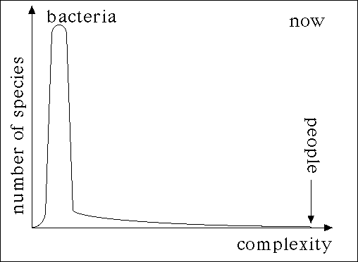

| Another explanation has been put forward by
Stephen Jay Gould.
Gould noted some complications with the standard interpretation. |
| |
Most lineages of ammonites contain species with low-dimensional sutures
throughout their histories. |
| |
Examining the descendants of a given
ancestor, no bias to higher suture dimension was observed. |
| |
No correlation was observed between the suture dimension and the longevity of a species. |
|
| Gould asserts the drift to higher dimensions is a
left wall phenomenon. |
| | Because the dimension of
a curve is at least 1,
random genetic drift cannot push the suture dimension lower; all it can do is
increase (or stay the same). | |
|
| Gould carries this point further and argues the
controversial view that |
|
|
| | there is no evolutionary drive to greater complexity, that the
effects we observe are all left wall phenomena. | |
|
| How does Gould support this view? |
|  |
| Now most life is still bacteria, but more complex forms have arisen, so there appears
to be an evolutionary drive toward greater complexity. However, click the picture to see another
interpretation. |
|